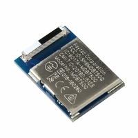

ZMK

Why Not?!
QMK?
I ❤ QMK!
The Problem
- QMK is GPL Licensed
- Bluetooth stacks are predominantly licensed incompatibly.
- QMK not designed up front with power efficiency in mind.
QMK "Nordic Fork" Licensing
- GPL is "viral"
- No further restrictions can be added
- Nordic SDK 5-clause adds restrictions on distribution
- Ergo, you are in violation of GPL if you release QMK binaries integrating Nordic SDK
What is ZMK?
A wireless first keyboard firmware with a focus on features, ease of use, and power efficiency
Hardware
- "Anything" Zephyr RTOS Supports
- nRF52 (and other Nordic chips)
- stm32!
- Proton-C*
- Planck
- stm32f303/stm32f072
- stm32wb?
Design Goals
- Wireless First
- Core firmware repo
- Keyboard layout/hardware, with stock keymaps
- User keymaps, prototypes, handwires managed separately
- Runtime keymaps as end goal
- Powerful out of the box, but with wide customization
Features
Core
- BLE
- Wireless Split
- Keymaps/layers
- Encoders*
- RGB*
Keymaps
- Shifted codes
- Hold-Tap (mod-tap, layer-tap, hold-shift)
- Momentary Layer
- BLE management (profile switching, bond clearing)
- Output selection (USB vs BLE when both connected)
- External Power (cut power to RGB/OLED to save power)
User Config Repos
- Not a fork of ZMK
- Include user keymaps and/or keyboard shields themselves
- GitHub Actions build firmware for you
- No local development/toolchain setup
- GitHub Web UI to edit keymaps!
Demo!
Visual History
April 29th
May 18th
June 24th
July 1st
July 24th
August 21st
October 8th
Designing For Wireless Future
Power
- Quiescent Current (e.g. 0.5mA per RGB LED)
- Interrupt Driven; Polling Kills
- MOSFETs to cut power
- EPD aka E-Ink
BLE Modules
- IC + Antenna
- FCC Certification
- Various sizes, sets of pins exposed
- Hard without PCBA!
- Beware Keep Out Areas
Materials
- Don't encase your keeb in a giant faraday cage!
- Acrylic, PC, Etc. Good
- Aluminum Bad
Future Work
- Full OLED Support
- Mouse Keys
- Combos/chords
- Stable 1.0 Release
- Runtime Keymaps
- ZMK Studio